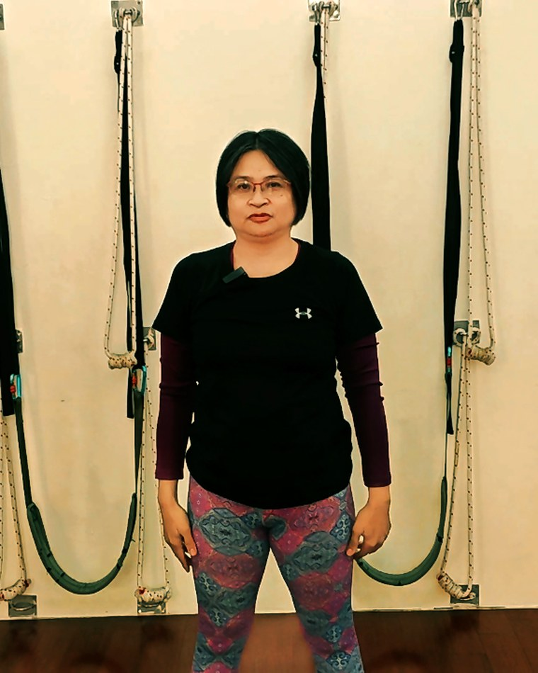
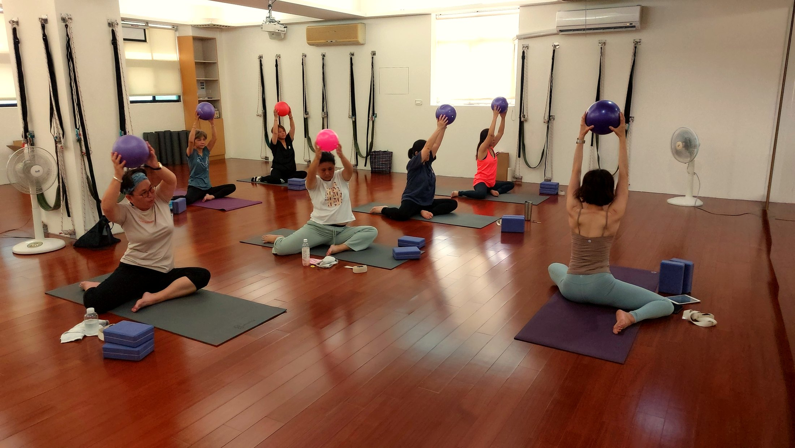
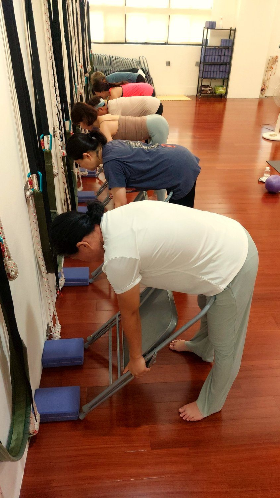

為什麼選鑫彥
「累壞你的，不是不夠努力，
而是練錯了方法。」
而是練錯了方法。」
在鑫彥，我們先幫你「看懂身體」，再對症練。用 AI 體態檢測看清楚你的圓肩、駝背、骨盆狀態，再由老師依你的狀況，安排真正適合你的練法——不是跟著大班硬跟。
壁繩是我們的招牌，招牌老師阿美帶你借力、找到對的位置，把睡著的肌肉喚醒。學員常說她「親切、專業、又風趣」。


先看懂你的身體，再安排適合你的練法。壁繩幫你借力，把睡著的肌肉喚醒，找回站直、不痠的自己。
在鑫彥，我們先幫你「看懂身體」，再對症練。用 AI 體態檢測看清楚你的圓肩、駝背、骨盆狀態，再由老師依你的狀況，安排真正適合你的練法——不是跟著大班硬跟。
壁繩是我們的招牌，招牌老師阿美帶你借力、找到對的位置，把睡著的肌肉喚醒。學員常說她「親切、專業、又風趣」。


不猜、不亂練。先用 AI 體態檢測看清楚你卡在哪，老師再圈出「先動這裡」最有感，每一次練習都練在刀口上。

壁繩幫你分擔重量、給你穩定支點，讓睡著的深層肌肉重新出力。對僵硬、沒基礎、怕受傷的人特別友善。
有一對一，也有小團課，依你的需求安排。上課之外 LINE 也能問——中高齡、低衝擊，陪你把好體態養成習慣。
從圓肩駝背、肩頸到日常久坐，把體態調整整理成一篇篇文章，都能免費閱讀。
久坐鬆體、骨盆前傾、肩頸放鬆、臀部喚醒……挑你最有感的主題，加 LINE 免費領取。
看全部免費電子書 →